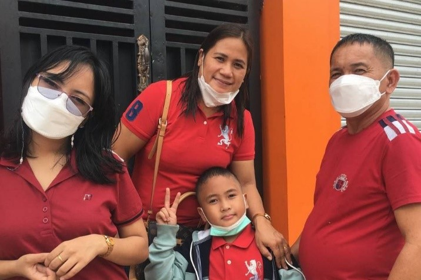

Flexing Myself
- 
My family are my biggest flex—I'm really proud of them. They are always there to support me in whatever I do and guide me. When life gets tough, they're my go-to people, and their love are irreplaceable. They teach me important stuff, not just about school but about being a good person too. I feel lucky to have them because, to me, they're the best part of my story.

My friends. Having friends, I can bond with for more than 7 years and still counting, is definitely a flex. They are the ones that always cheer me up and that I can vent with.

I am proud being a member of Iglesia Ni Cristo. God's words guide me to be kind, faithful, and decent. Having a relationship with God encourages me to live comfortably in life.

My cousins. People say blood is thicker than water, and that is indeed true. Through ups and downs, we are always there, helping one another.

Flexing this guy for cheering me up especially in times of pandemic. He always made me smile.

Surviving high school with honors is something I am proud of. Being a high school student might be exhausting, but it is worthwhile to work for.